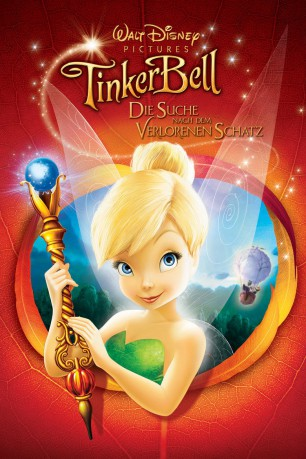

#963 TinkerBell 2 - Die Suche nach dem verlorenen Schatz
Alternativ: Tinker Bell and the Lost Treasure
 
 IMDB-Wertung: 6.8 / 10
IMDB-Wertung: 6.8 / 10  Metascore: 0
Metascore: 0 
Fee Tinkerbell wird die ehrenhafte Aufgabe übertragen für die große Herbst-Winter-Feier das wichtigste Element zu gestalten. Sie ist ungemein stolz und beginnt voller Eifer und Ernsthaftigkeit daran zu arbeiten. Unterstützt wird sie von ihrem besten Freund Terrence. Doch Tinkerbell wäre nicht Tinkerbell, wenn nicht etwas schief laufen würde. Um doch noch rechtzeitig das Schmuckwerk präsentieren zu können, hofft sie einen in einem Schiffswrack begrabenen Spiegel zu finden und begibt sich auf ein höchst gefährliches Abenteuer.
Jahr: 2009
Dauer: 81 Minuten
FSK:
Land: USA Studio: Walt Disney Studios Home EntertainmentTonspuren: DD5.1 - ,
Untertitel:
Auflösung: 1080p (1920x1080) Größe: 4464 MB
Genre: Animation/Trick, Abenteuer, Familie, Fantasy
Regisseur: Klay Hall
Drehbuch: Evan Spiliotopoulos, Klay Hall, Evan Spiliotopoulos
Soundtrack: Joel McNeely
Darsteller:
Datei: X:\Kinder Disney HD\Tinkerbell\TinkerBell 2 - Die Suche nach dem verlorenen Schatz (2009, FSK, 1920x1080).mkv seit 29.04.2015
Festplatte: Kinder-Filme+Trick
 Es gibt insgesamt 11 Filme in der Gruppe 'Kinder Disney HD\Tinkerbell'
Es gibt insgesamt 11 Filme in der Gruppe 'Kinder Disney HD\Tinkerbell'